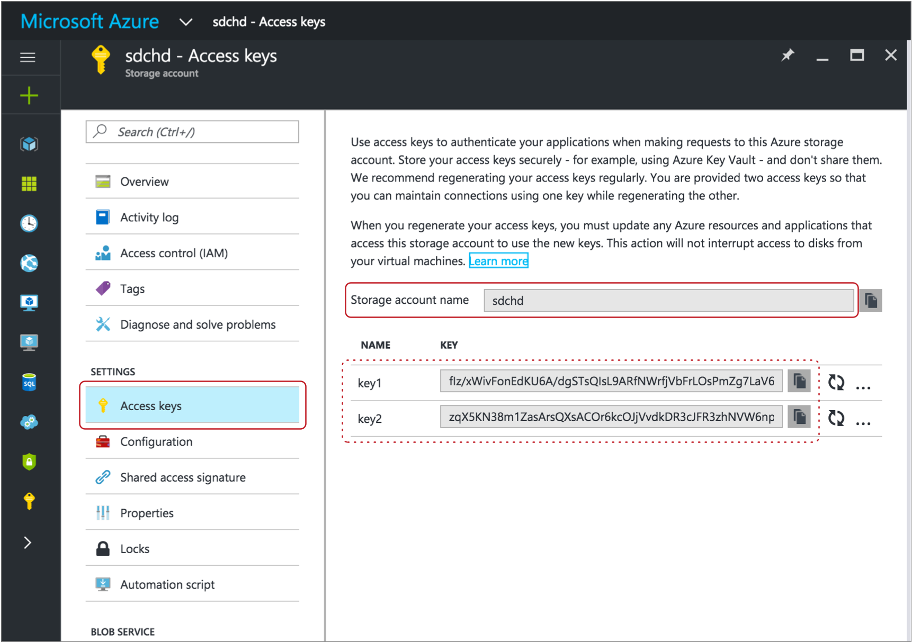
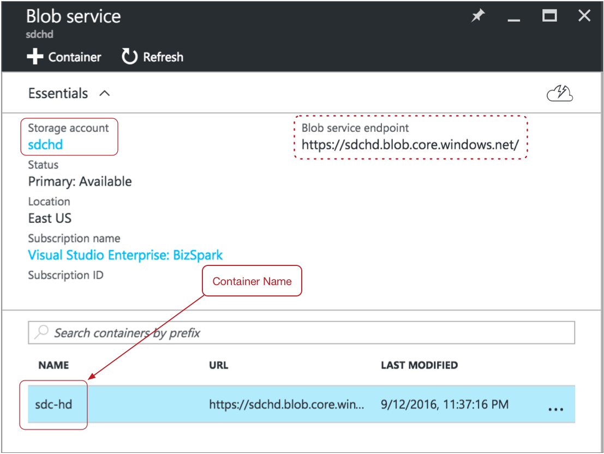
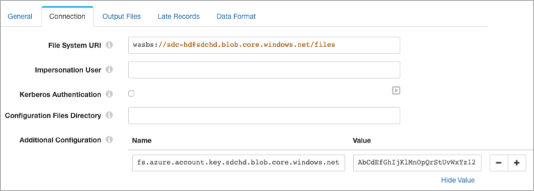

Hadoop FS
The Hadoop FS destination writes data to the Hadoop Distributed File System (HDFS). You can write the data to HDFS as flat files or Hadoop sequence files. You can also use the whole file data format to write whole files to HDFS.
When you configure a Hadoop FS destination, you can define a directory template and time basis to determine the output directories that the destination creates and the files where records are written.
As part of the Drift Synchronization Solution for Hive, you can alternatively use record header attributes to perform record-based writes. You can write records to the specified directory, use the defined Avro schema, and roll files based on record header attributes. For more information, see Record Header Attributes for Record-Based Writes.
You can define a file prefix and suffix, the data time zone, and properties that define when the destination closes a file. You can specify the amount of time that a record can be written to its associated directory and what happens to late records.
You can configure the Hadoop FS destination to write to Azure HDInsight.
The destination can generate events for an event stream. For more information about the event framework, see Dataflow Triggers Overview.
When necessary, you can enable Kerberos authentication and specify a Hadoop user. You can also use Hadoop configuration files and add other Hadoop configuration properties as needed.
You can use Gzip, Bzip2, Snappy, LZ4, and other compression formats to write output files.
Directory Templates
By default, the Hadoop FS destination uses directory templates to create output and late record directories. Hadoop FS writes records to the directories based on the configured time basis.
You can alternatively write records to directories based on the targetDirectory record header attribute. Using the targetDirectory attribute disables the ability to define directory templates.
When you define a directory template, you can use a mix
of constants, field values, and datetime variables. You can use the
every function to create new directories at regular
intervals based on hours, minutes, or seconds, starting on the hour. You can also
use the record:valueOrDefault function to use field values or a
default in the directory template.
/outputfiles/${record:valueOrDefault("/State", "unknown")}/${YY()}-${MM()}-${DD()}-${hh()}- Constants
- You can use any constant, such as "output".
- Datetime Variables
- You can use datetime variables, such as
${YYYY()}or${DD()}. The destination creates directories as needed, based on the smallest datetime variable that you use. For example, if the smallest variable is hours, then the directories are created for every hour of the day that receives output records. everyfunction- You can use the
everyfunction in a directory template to create directories at regular intervals based on hours, minutes, or seconds, beginning on the hour. The intervals should be a submultiple or integer factor of 60. For example, you can create directories every 15 minutes or 30 seconds. record:valueOrDefaultfunction- You can use the following expression to use the value of a field
and the specified default value if the field does not exist or
if the field is null:
${record:valueOrDefault(<field path>, <default value>)}
Time Basis
When using directory templates, the time basis helps determine when directories are created. It also determines the directory Hadoop FS uses when writing a record, and whether a record is late.
When using the targetDirectory record header attribute to write records, the time basis determines only whether a record is late.
You can use the following times as the time basis:
- Processing Time
- When you use processing time as the time basis, the destination creates directories based on the processing time and the directory template, and writes records to the directories based on when they are processed.
- Record Time
- When you use the time associated with a record as the time basis, you specify a Date field in the record. The destination creates directories based on the datetimes associated with the records and writes the records to the appropriate directories.
Late Records and Late Record Handling
When you use a record time as the time basis, you can define a time limit for records to be written to their associated output file. When the destination creates a new output file in a new directory, the previous output file is kept open for the specified late record time limit. When records that belong in that file arrive within the time limit, the destination writes the records to the open output file. When the late record time limit is reached, the output file is closed and any record that arrives past this limit is considered late.
You can send late records to a late records file or to the stage for error handling. When you send records to a late records file, you define a late records directory template.
/tmp/out/${YYYY()}-${MM()}-${DD()}-${hh()} The first records that arrive have a datetime between the hours of 02:00 and 02:59, and so are written to an output file in the 02 directory. When records with a datetime between the hours of 03:00 and 03:59 arrive, the destination creates a new file in an 03 directory. The destination keeps the file in the 02 directory open for another hour.
If a record with a datetime between the hours of 02:00 and 02:59 arrives before the hour time limit, the destination writes the record to the open file in the 02 directory. After one hour, the destination closes the output file in the 02 directory. Any records with a datetime between the hours of 02:00 and 02:59 that arrive after the one hour time limit are considered late. The late records are sent to the stage for error handling.
Timeout to Close Idle Files
You can configure the maximum time that an open output file can remain idle. After no records are written to an output file for the specified amount of time, the Hadoop FS destination closes the file.
You might want to configure an idle timeout when output files remain open and idle for too long, thus delaying another system from processing the files.
- You configured the maximum number of records to be written to output files or the maximum size of output files, but records have stopped arriving. An output file that has not reached the maximum number of records or the maximum file size stays open until more records arrive.
- You configured a date field in the record as the time basis and have
configured a late record time limit, but records arrive in
chronological order. When a new directory is created, the output file
in the previous directory remains open for the configured late record
time limit. However, no records are ever written to the open file in
the previous directory.
For example, when a record with a datetime of 03:00 arrives, the destination creates a new file in a new 03 directory. The previous file in the 02 directory is kept open for the late record time limit, which is an hour by default. However, when records arrive in chronological order, no records that belong in the 02 directory arrive after the 03 directory is created.
In either situation, configure an idle timeout so that other systems can process the files sooner, instead of waiting for the configured maximum records, maximum file size, or late records conditions to occur.
Recovery
The Hadoop FS destination supports recovery after an unexpected stop of the pipeline by renaming temporary files when the pipeline restarts.
_tmp_<prefix>_<runnerId><prefix> is the file prefix defined for the destination
and <runnerId> is the ID of the pipeline runner performing the
pipeline processing. For example, when the destination prefix is defined as
sdc and the destination runs from a single-threaded
pipeline, the temporary file is named like so: _tmp_sdc_0. _tmp_ string and to
replace the pipeline runner ID with a random unique identifier like
so:<prefix>_e7ce67c5-013d-47a7-9496-8c882ddb28a0However, when the pipeline stops unexpectedly, the temporary files remain. When the pipeline restarts, the destination scans all subdirectories of the defined directory template to rename any temporary files that match the defined prefix for the destination. After the destination renames the temporary files, it continues writing to new output files.
_tmp_<prefix> -
the destination renames that file also.- The directory template includes an expression with the record:value or record:valueOrDefault function.
- If the record:value or record:valueOrDefault function evaluates to an empty string or to a subdirectory, the destination cannot determine those locations when the pipeline restarts. As a result, the destination cannot rename any temporary files written to those locations.
- The directory is defined in the targetDirectory record header attribute.
- When the directory is defined in the targetDirectory record header attribute, the destination cannot determine where to look for temporary files when the pipeline restarts. As a result, it cannot rename the temporary files.
In either of these situations, you must manually rename the temporary files.
File recovery can slow down the pipeline as it restarts. If needed, you can configure the destination to skip file recovery.
Data Formats
- Avro
- The destination writes records based on the Avro schema. You can use one of the following methods to specify the location of the Avro schema definition:
- Binary
- The destination writes binary data from a single field in the record.
- Delimited
- The destination writes records as delimited data. When you use this data format, the root field must be list or list-map.
- JSON
- The destination writes records as JSON data. You can use one of
the following formats:
- Array - Each file includes a single array. In the array, each element is a JSON representation of each record.
- Multiple objects - Each file includes multiple JSON objects. Each object is a JSON representation of a record.
- Protobuf
- Writes a batch of messages in each file.
- SDC Record
- The destination writes records in the SDC Record data format.
- Text
- The destination writes data from a single text field to the destination system. When you configure the stage, you select the field to use. When necessary, merge record data into the field earlier in the pipeline.
- Whole File
- Streams whole files to the destination system. The destination writes the data to the file and location defined in the stage. If a file of the same name already exists, you can configure the destination to overwrite the existing file or send the current file to error.
Writing to Azure HDInsight
You can use the HDP stage libraries to write to Azure Blob storage using the WASB protocol. This enables the Hadoop FS destination to write directly to Azure HDInsight.
To write to an Azure HDInsight cluster, Data Collector can be installed anywhere. It can be installed on a node in the HDInsight cluster or outside of the cluster entirely.
- On the General tab of the Hadoop FS destination, for the Stage Library property, select the HDP stage library version 2.4 or later.
- Configure Azure credentials in one of the following ways:
- If the Azure credentials are defined in the HDFS configuration file
core-site.xml, configure the destination to access the file.- On the Hadoop FS tab, configure the Hadoop FS Configuration Directory property to point to the directory that includes the file.
- If the credentials are not defined in the
core-site.xmlfile, use a Hadoop FS configuration property to pass the Azure credentials:- In the destination, on the Hadoop FS tab,
click the Add icon to add a new Hadoop FS
configuration property.
You can use simple or bulk edit mode to add configuration properties.
- Enter the following property name, using the Azure storage
account name for <storage account
name>:
For example, if the storage account name is "sdchd", then enter the following name for the property:fs.azure.account.key.<storage account name>.blob.core.windows.netfs.azure.account.key.sdchd.blob.core.windows.netTip: You can find the Azure storage account name on the Access Keys page in the Microsoft Azure portal. To view the page in the Microsoft Azure portal, click . A page like the following appears, with the storage account name and access keys:
- For the value of the Hadoop FS Configuration property, enter an
access key value for the Azure storage account. You can use any
valid key.Tip: The account key value also displays on the Access Keys page. For example, on the image above, you could use either the key1 or key2 value.
- In the destination, on the Hadoop FS tab,
click the Add icon to add a new Hadoop FS
configuration property.
- If the Azure credentials are defined in the HDFS configuration file
- In the destination, on the Hadoop FS tab, configure the
Hadoop FS URI property using the following
structure:
<wasb[s]>://<container name>@<storage account name>.blob.core.windows.net/<path to files>In the URI, <container name> is the Azure container name. And <storage account name> is the same Azure storage account name that you used for the Hadoop FS configuration property.
For example, for asdc-hdcontainer in a storage account namedsdchd, with all files in a "files" directory, you would define the Hadoop FS URI as follows:wasbs://sdc-hd@sdchd.blob.core.windows.net/filesTip: You can find the container name and storage account name on the Essentials page in the Microsoft Azure portal. For a standard storage account, in the Microsoft Azure portal, click . For a blob storage account, click .A page like the following displays with the container name and storage account name:

Though the host name for the Hadoop FS URI is<storage account name>.blob.core.windows.net, you can alternatively use the host name of the Azure blob service endpoint as the hostname for the Hadoop FS URI.
Example
The following image shows how to configure the Hadoop FS destination to write to HDInsight using the Azure account information in the examples above:

Event Generation
The Hadoop FS destination can generate events that you can use in an event stream. When you enable event generation, the destination generates event records each time the destination closes a file or completes streaming a whole file.
- With the HDFS File Metadata executor to move
or change permissions on closed files.
For an example, see Case Study: Output File Management.
- With the Hive Query executor to run Hive or
Impala queries after closing output files.
For an example, see Case Study: Impala Metadata Updates for DDS for Hive.
- With the MapReduce executor to convert
completed Avro files to ORC files or to Parquet.
For an example, see Case Study: Parquet Conversion.
- With the Email executor to send a custom email
after receiving an event.
For an example, see Case Study: Sending Email.
- With a destination to store event information.
For an example, see Case Study: Event Storage.
For more information about dataflow triggers and the event framework, see Dataflow Triggers Overview.
Event Records
Hadoop FS event records include the following event-related record header attributes. Record header attributes are stored as String values:
| Record Header Attribute | Description |
|---|---|
| sdc.event.type | Event type. Uses one of the following types:
|
| sdc.event.version | An integer that indicates the version of the event record type. |
| sdc.event.creation_timestamp | Epoch timestamp when the stage created the event. |
- File closure
- The destination generates a file closure event record when it closes an output file.
- Whole file processed
- The destination generates an event record when it completes
streaming a whole file. Whole file event records have the
sdc.event.typerecord header attribute set towholeFileProcessedand have the following fields:Field Description sourceFileInfo A map of attributes about the original whole file that was processed. The attributes include: - size - Size of the whole file in bytes.
Additional attributes depend on the information provided by the origin system.
targetFileInfo A map of attributes about the whole file written to the destination. The attributes include: - path - An absolute path the processed whole file.
checksum Checksum generated for the written file. Included only when you configure the destination to include checksums in the event record.
checksumAlgorithm Algorithm used to generate the checksum. Included only when you configure the destination to include checksums in the event record.
Kerberos Authentication
You can use Kerberos authentication to connect to HDFS. When you use Kerberos authentication, Data Collector uses the Kerberos principal and keytab to connect to HDFS. By default, Data Collector uses the user account who started it to connect.
The Kerberos principal and keytab are defined in the Data Collector
configuration file, $SDC_CONF/sdc.properties. To use Kerberos
authentication, configure all Kerberos properties in the Data Collector
configuration file, and then enable Kerberos in the Hadoop FS destination.
For more information about enabling Kerberos authentication for Data Collector, see Kerberos Authentication.
Using an HDFS User
Data Collector can either use the currently logged in Data Collector user or a user configured in the destination to write to HDFS.
A Data Collector configuration property can be set that requires using the currently logged in Data Collector user. When this property is not set, you can specify a user in the origin. For more information about Hadoop impersonation and the Data Collector property, see Hadoop Impersonation Mode.
Note that the destination uses a different user account to connect to HDFS. By default, Data Collector uses the user account who started it to connect to external systems. When using Kerberos, Data Collector uses the Kerberos principal.
- On Hadoop, configure the user as a proxy user and
authorize the user to impersonate a Hadoop user.
For more information, see the Hadoop documentation.
- In the Hadoop FS destination, on the Hadoop FS tab, configure the HDFS User property.
HDFS Properties and Configuration Files
- HDFS configuration files
- You can use the following HDFS configuration files with the Hadoop FS
destination:
- core-site.xml
- hdfs-site.xml
- Individual properties
- You can configure individual HDFS properties in the destination. To add an
HDFS property, you specify the exact property name and the value. The Hadoop
FS destination does not validate the property names or
values.Note: Individual properties override properties defined in the HDFS configuration file.
Configuring a Hadoop FS Destination
Configure a Hadoop FS destination to write data to HDFS.
-
In the Properties panel, on the General tab, configure the
following properties:
General Property Description Name Stage name. Description Optional description. Stage Library Library version that you want to use. Produce Events 
Generates event records when events occur. Use for event handling. 
Required Fields Fields that must include data for the record to be passed into the stage. Tip: You might include fields that the stage uses.Records that do not include all required fields are processed based on the error handling configured for the pipeline.
Preconditions Conditions that must evaluate to TRUE to allow a record to enter the stage for processing. Click Add to create additional preconditions. Records that do not meet all preconditions are processed based on the error handling configured for the stage.
-
In the Properties panel, on the General tab, configure the
following properties:
General Property Description Name Stage name. Description Optional description. Stage Library Library version that you want to use. Produce Events Generates event records when events occur. Use for event handling. Required Fields Fields that must include data for the record to be passed into the stage. Tip: You might include fields that the stage uses.Records that do not include all required fields are processed based on the error handling configured for the pipeline.
Preconditions Conditions that must evaluate to TRUE to allow a record to enter the stage for processing. Click Add to create additional preconditions. Records that do not meet all preconditions are processed based on the error handling configured for the stage.
On Record Error Error record handling for the stage: - Discard - Discards the record.
- Send to Error - Sends the record to the pipeline for error handling.
- Stop Pipeline - Stops the pipeline.
-
On the Hadoop FS tab, configure the following
properties:
Hadoop FS Property Description Hadoop FS URI Optional HDFS URI. When not configured, the destination uses the URI defined by the fs.defaultFS property in the core-site.xml file.
HDFS User The HDFS user to use to access HDFS. When using this property, make sure HDFS is configured appropriately. When not configured, the pipeline uses the currently logged in Data Collector user.
Not configurable when Data Collector is configured to use the currently logged in Data Collector user. For more information, see Hadoop Impersonation Mode.
Kerberos Authentication Uses Kerberos credentials to connect to HDFS. When selected, uses the Kerberos principal and keytab defined in the Data Collector configuration file,
$SDC_CONF/sdc.properties.Hadoop FS Configuration Directory Location of the HDFS configuration files. For a Cloudera Manager installation, enter
hadoop-conf. For all other installations, use a directory or symlink within the Data Collector resources directory.You can use the following files with the Hadoop FS destination:- core-site.xml
- hdfs-site.xml
Note: Properties in the configuration files are overridden by individual properties defined in the stage.Hadoop FS Configuration Additional HDFS properties to use. To add properties, click Add and define the property name and value. Use the property names and values as expected by HDFS.
-
On the Output Files tab, configure the following
options:
Output Files Property Description File Type Output file type: - Text files
- Sequence files
- Whole files - Select when using the whole file data format.
File Prefix Prefix to use for output files. Use when writing to a directory that receives files from other sources. Uses the prefix sdc-${sdc:id()} by default. The prefix evaluates to sdc-<Data Collector ID>.
The Data Collector ID is stored in the following file: $SDC_DATA/sdc.id. For more information about environment variables, see Data Collector Environment Configuration.
File Suffix Suffix to use for output files, such as txt or json. When used, the destination adds a period and the configured suffix as follows: <filename>.<suffix>. You can include periods within the suffix, but do not start the suffix with a period. Forward slashes are not allowed.
Not available for the whole file data format.
Directory in Header
Indicates that the target directory is defined in record headers. Use only when the targetDirectory header attribute is defined for all records. Directory Template Template for creating output directories. You can use constants, field values, and datetime variables. Output directories are created based on the smallest datetime variable in the template.
Data Time Zone Time zone for the destination system. Used to resolve datetimes in the directory template and evaluate where records are written. Time Basis Time basis to use for creating output directories and writing records to the directories. Use one of the following expressions: - ${time:now()} - Uses the processing time as the time basis.
- ${record:value(<date field path>)} - Uses the time associated with the record as the time basis.
Max Records in a File Maximum number of records to be written to an output file. Additional records are written to a new file. Use 0 to opt out of this property.
Not available when using the whole file data format.
Max File Size (MB) Maximum size of an output file. Additional records are written to a new file. Use 0 to opt out of this property.
Not available when using the whole file data format.
Idle Timeout (secs)
Maximum time that an output file can remain idle. After no records are written to a file for this amount of time, the destination closes the file. Enter a time in seconds or use the MINUTESorHOURSconstant in an expression to define the time increment.Use -1 to set no limit. Default is 1 hour, defined as follows:
${1 * HOURS}.Not available when using the whole file data format.
Compression Codec Compression type for output files: - None
- gzip
- bzip2
- Snappy
- LZ4
- Other
Note: Do not use with Avro data. To compress Avro data, use the Avro Compression Codec property on the Data Formats tab.Compression Codec Class Full class name of the other compression codec that you want to use. Sequence File Key Record key for creating sequence files. Use one of the following options: - ${record:value(<field path>)}
- ${uuid()}
Compression Type Compression type for sequence files when using a compression codec: - Block Compression
- Record Compression
Use Roll Attribute
Checks the record header for the roll header attribute and closes the current file when the roll attribute exists. Can be used with Max Records in a File and Max File Size to close files.
Roll Attribute Name Name of the roll header attribute. Default is roll.
Validate HDFS Permissions When you start the pipeline, the destination tries writing to the configured directory template to validate permissions. The pipeline does not start if validation fails. Note: Do not use this option when the directory template uses expressions to represent the entire directory.Skip File Recovery Determines whether the destination performs file recovery after an unexpected stop of the pipeline. -
On the Late Records tab, configure the following
properties:
Tip: These properties are relevant for a time basis based on the time of a record. If you use processing time as the time basis, set the late record time limit to one second.
Late Records Property
Description Late Record Time Limit (secs) Time limit for output directories to accept data. You can enter a time in seconds, or use the expression to enter a time in hours. You can also use MINUTES in the default expression to define the time in minutes.
Late Record Handling Determines how to handle late records: - Send to error - Sends the record to the stage for error handling.
- Send to late records file - Sends the record to a late records file.
Late Record Directory Template Template for creating late record directories. You can use constants, field values, and datetime variables. Output directories are created based on the smallest datetime variable in the template.
-
On the Data Format tab, configure the following
property:
Data Format Property Description Data Format
Format of data to be written. Use one of the following options: - Avro
- Binary
- Delimited
- JSON
- Protobuf
- SDC Record
- Text
- Whole File
-
For Avro data, on the Data Format tab, configure the
following properties:
Avro Property Description Avro Schema Location Location of the Avro schema definition to use when writing data: - In Pipeline Configuration - Use the schema that you provide in the stage configuration.
- In Record Header - Use the schema in the avroSchema
record header attribute. Use only when the
avroSchema attribute is defined for all records.
- Confluent Schema Registry - Retrieve the schema from the Confluent Schema Registry.
The destination includes the schema definition in each generated file.
Avro Schema Avro schema definition used to write the data. You can optionally use the runtime:loadResource function to use a schema definition stored in a runtime resource file.
Register Schema Select to register a new Avro schema with the Confluent Schema Registry. Schema Registry URLs Confluent Schema Registry URLs used to look up the schema or to register a new schema. To add a URL, click Add. Use the following format to enter the URL: http://<host name>:<port number>Look Up Schema By Method used to look up the schema in the Confluent Schema Registry: - Subject - Look up the specified Avro schema subject.
- Schema ID - Look up the specified Avro schema ID.
Schema Subject Avro schema subject to look up or to register in the Confluent Schema Registry. If the specified subject to look up has multiple schema versions, the origin uses the latest schema version for that subject. To use an older version, find the corresponding schema ID, and then set the Look Up Schema By property to Schema ID.
Schema ID Avro schema ID to look up in the Confluent Schema Registry. Avro Compression Codec The Avro compression type to use. When using Avro compression, do not enable other compression available in the destination.
-
For whole files, on the Data Format tab, configure the
following properties:
Whole File Property Description File Name Expression Expression to use for the file names.
For tips on how to name files based on input file names, see Writing Whole Files.
Permissions Expression Expression that defines the access permissions for output files. Expressions should evaluate to a symbolic or numeric/octal representation of the permissions you want to use. By default, with no specified expression, files use the default permissions of the destination system.
To use the original source file access permissions, use the following expression:${record:value('/fileInfo/permissions')}File Exists Action to take when a file of the same name already exists in the output directory. Use one of the following options: - Send to Error - Handles the record based on stage error record handling.
- Overwrite - Overwrites the existing file.
Include Checksum in Events Includes checksum information in whole file event records. Use only when the destination generates event records.
Checksum Algorithm Algorithm to generate the checksum.